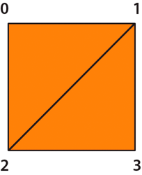
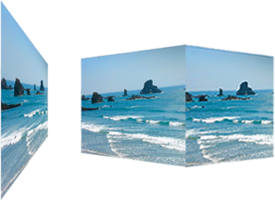
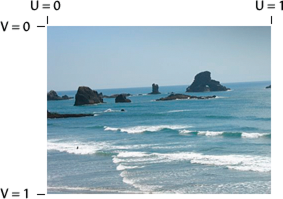
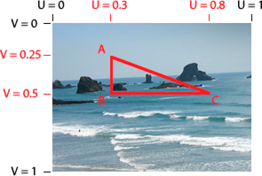
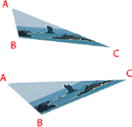
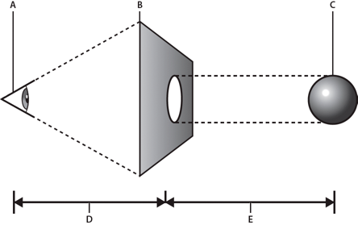
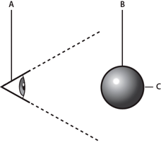
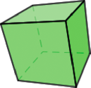
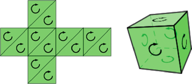

|

In ActionScript, you perform bitmap transformations
using the
Graphics.drawTriangles()
method,
because 3D models are represented by a collection of triangles in
space. (However, Flash Player and AIR do not support a depth buffer,
so display objects are still inherently flat, or 2D. This is described
in
Understanding 3D display objects in Flash Player and the AIR runtime
.)
The
Graphics.drawTriangles()
method is like the
Graphics.drawPath()
method,
as it takes a set of coordinates to draw a triangle path.
To familiarize yourself with using
Graphics.drawPath()
,
see
Drawing Paths
.
The
Graphics.drawTriangles()
method uses a Vector.<Number>
to specify the point locations for the triangle path:
drawTriangles(vertices:Vector.<Number>, indices:Vector.<int> = null, uvtData:Vector.<Number> = null, culling:String = "none"):void
The first parameter
of
drawTriangles()
is the only required parameter:
the
vertices
parameter. This parameter is a vector
of numbers defining the coordinates through which your triangles
are drawn. Every three sets of coordinates (six numbers) represents
a triangle path. Without the
indices
parameter, the
length of the vector should always be a factor of six, since each
triangle requires three coordinate pairs (three sets of two x/y
values). For example:
graphics.beginFill(0xFF8000);
graphics.drawTriangles(
Vector.<Number>([
10,10, 100,10, 10,100,
110,10, 110,100, 20,100]));
Neither of these triangles
share any points, but if they did, the second
drawTriangles()
parameter,
indices
,
could be used to reuse values in the
vertices
vector
for more than one triangle.
When using the
indices
parameter, be aware that
the
indices
values are point indices, not indices
that relate directly to the
vertices
array elements.
In other words, an index in the
vertices
vector
as defined by
indices
is actually the real index
divided by 2. For the third point of a
vertices
vector,
for example, use an
indices
value of 2, even though
the first numeric value of that point starts at the vector index
of 4.
For example, merge two triangles to share the diagonal edge using
the
indices
parameter:
graphics.beginFill(0xFF8000);
graphics.drawTriangles(
Vector.<Number>([10,10, 100,10, 10,100, 100,100]),
Vector.<int>([0,1,2, 1,3,2]));
Notice that though a square has now been drawn using two triangles,
only four points were specified in the
vertices
vector.
Using
indices
, the two points shared by the two
triangles are reused for each triangle. This reduces the overall vertices
count from 6 (12 numbers) to 4 (8 numbers):

A square drawn with two triangles using the vertices parameter
This technique becomes useful with larger triangle meshes where
most points are shared by multiple triangles.
All fills can be applied to triangles. The fills are applied
to the resulting triangle mesh as they would to any other shape.
Transforming bitmaps
Bitmap
transformations provide the illusion of perspective or "texture"
on a three-dimensional object. Specifically, you can distort a bitmap
toward a vanishing point so the image appears to shrink as it moves
toward the vanishing point. Or, you can use a two-dimensional bitmap
to create a surface for a three-dimensional object, providing the
illusion of texture or “wrapping” on that three-dimensional object.

A two-dimensional surface using a vanishing point and a three-dimensional
object wrapped with a bitmap.
UV mapping
Once
you start working with textures, you'll want to make use of the
uvtData parameter of
drawTriangles()
. This parameter
allows you to set up UV mapping for bitmap fills.
UV mapping is a method for texturing objects. It relies on two
values, a U horizontal (x) value and a V vertical (y) value. Rather
than being based on pixel values, they are based on percentages.
0 U and 0 V is the upper-left of an image and 1 U and 1 V is the
lower-right:

The UV 0 and 1 locations on a bitmap image
Vectors of a triangle can be given UV coordinates to associate
themselves with the respective locations on an image:

The UV coordinates of a triangular area of a bitmap image
The UV values stay consistent with the points of the triangle:

The vertices of the triangle move and the bitmap distorts
to keep the UV values for an individual point the same
As ActionScript 3D transformations are applied to the triangle
associated with the bitmap, the bitmap image is applied to the triangle
based on the UV values. So, instead of using matrix calculations,
set or adjust the UV values to create a three-dimensional effect.
The
Graphics.drawTriangles()
method
also accepts an optional piece of information for three-dimensional
transformations: the T value. The T value in uvtData represents
the 3D perspective, or more specifically, the scale factor of the
associated vertex. UVT mapping adds perspective correction to UV
mapping. For example, if an object is positioned in 3D space away
from the viewpoint so that it appears to be 50% its “original” size,
the T value of that object would be 0.5. Since triangles are drawn
to represent objects in 3D space, their locations along the z-axis
determine their T values. The equation that determines the T value
is:
T = focalLength/(focalLength + z);
In this equation, focalLength represents a focal length or calculated
"screen" location which dictates the amount of perspective provided
in the view.

The focal length and z value
-
A.
-
viewpoint
-
B.
-
screen
-
C.
-
3D object
-
D.
-
focalLength
value
-
E.
-
z value
The value of T is used to scale basic shapes to make them seem
further in the distance. It is usually the value used to convert
3D points to 2D points. In the case of UVT data, it is also used
to scale a bitmap between the points within a triangle with perspective.
When you define UVT values, the T value directly follows the
UV values defined for a vertex. With the inclusion of T, every three
values in the
uvtData
parameter (U, V, and T) match
up with every two values in the
vertices
parameter
(x, and y). With UV values alone, uvtData.length == vertices.length.
With the inclusion of a T value, uvtData.length = 1.5*vertices.length.
The following example shows a plane being
rotated in 3D space using UVT data. This example uses an image called
ocean.jpg and a “helper” class, ImageLoader, to load the ocean.jpg
image so it can be assigned to the BitmapData object.
Here is the ImageLoader class source (save this code into a file
named ImageLoader.as):
package {
import flash.display.*
import flash.events.*;
import flash.net.URLRequest;
public class ImageLoader extends Sprite {
public var url:String;
public var bitmap:Bitmap;
public function ImageLoader(loc:String = null) {
if (loc != null){
url = loc;
loadImage();
}
}
public function loadImage():void{
if (url != null){
var loader:Loader = new Loader();
loader.contentLoaderInfo.addEventListener(Event.COMPLETE, onComplete);
loader.contentLoaderInfo.addEventListener(IOErrorEvent.IO_ERROR, onIoError);
var req:URLRequest = new URLRequest(url);
loader.load(req);
}
}
private function onComplete(event:Event):void {
var loader:Loader = Loader(event.target.loader);
var info:LoaderInfo = LoaderInfo(loader.contentLoaderInfo);
this.bitmap = info.content as Bitmap;
this.dispatchEvent(new Event(Event.COMPLETE));
}
private function onIoError(event:IOErrorEvent):void {
trace("onIoError: " + event);
}
}
}
And here is the ActionScript that uses triangles, UV mapping,
and T values to make the image appear as if it is shrinking toward
a vanishing point and rotating. Save this code in a file named Spinning3dOcean.as:
package {
import flash.display.*
import flash.events.*;
import flash.utils.getTimer;
public class Spinning3dOcean extends Sprite {
// plane vertex coordinates (and t values)
var x1:Number = -100, y1:Number = -100, z1:Number = 0, t1:Number = 0;
var x2:Number = 100, y2:Number = -100, z2:Number = 0, t2:Number = 0;
var x3:Number = 100, y3:Number = 100, z3:Number = 0, t3:Number = 0;
var x4:Number = -100, y4:Number = 100, z4:Number = 0, t4:Number = 0;
var focalLength:Number = 200;
// 2 triangles for 1 plane, indices will always be the same
var indices:Vector.<int>;
var container:Sprite;
var bitmapData:BitmapData; // texture
var imageLoader:ImageLoader;
public function Spinning3dOcean():void {
indices = new Vector.<int>();
indices.push(0,1,3, 1,2,3);
container = new Sprite(); // container to draw triangles in
container.x = 200;
container.y = 200;
addChild(container);
imageLoader = new ImageLoader("ocean.jpg");
imageLoader.addEventListener(Event.COMPLETE, onImageLoaded);
}
function onImageLoaded(event:Event):void {
bitmapData = imageLoader.bitmap.bitmapData;
// animate every frame
addEventListener(Event.ENTER_FRAME, rotatePlane);
}
function rotatePlane(event:Event):void {
// rotate vertices over time
var ticker = getTimer()/400;
z2 = z3 = -(z1 = z4 = 100*Math.sin(ticker));
x2 = x3 = -(x1 = x4 = 100*Math.cos(ticker));
// calculate t values
t1 = focalLength/(focalLength + z1);
t2 = focalLength/(focalLength + z2);
t3 = focalLength/(focalLength + z3);
t4 = focalLength/(focalLength + z4);
// determine triangle vertices based on t values
var vertices:Vector.<Number> = new Vector.<Number>();
vertices.push(x1*t1,y1*t1, x2*t2,y2*t2, x3*t3,y3*t3, x4*t4,y4*t4);
// set T values allowing perspective to change
// as each vertex moves around in z space
var uvtData:Vector.<Number> = new Vector.<Number>();
uvtData.push(0,0,t1, 1,0,t2, 1,1,t3, 0,1,t4);
// draw
container.graphics.clear();
container.graphics.beginBitmapFill(bitmapData);
container.graphics.drawTriangles(vertices, indices, uvtData);
}
}
}
To test this example, save these two class files in the same
directory as an image named “ocean.jpg”. You can see how the original
bitmap is transformed to appear as if it is vanishing in the distance
and rotating in 3D space.
Culling
Culling
is the process that determines which surfaces of a three-dimensional object
the renderer should not render because they are hidden from the
current viewpoint. In 3D space, the surface on the “back” of a three-dimensional
object is hidden from the viewpoint:

The back of a 3D object is hidden from the viewpoint.
-
A.
-
viewpoint
-
B.
-
3D object
-
C.
-
the back
of a three dimensional object
Inherently all triangles are always rendered no matter their
size, shape, or position. Culling insures that Flash Player or AIR
renders your 3D object correctly. In addition, to save on rendering
cycles, sometimes you want some triangles to be skipped by the render.
Consider a cube rotating in space. At any given time, you'll never
see more than three sides of that cube since the sides not in view would
be facing the other direction on the other side of the cube. Since
those sides are not going to be seen, the renderer shouldn't draw
them. Without culling, Flash Player or AIR renders both the front
and back sides.

A cube has sides not visible from the current viewpoint
So, the
Graphics.drawTriangles()
method has
a fourth parameter to establish a culling value:
public function drawTriangles(vertices:Vector.<Number>, indices:Vector.<int> = null, uvtData:Vector.<Number> = null, culling:String = "none"):void
The culling
parameter is a value from the
TriangleCulling
enumeration class:
TriangleCulling.NONE
,
TriangleCulling.POSITIVE
,
and
TriangleCulling.NEGATIVE
. These values are
dependent upon the direction of the triangle path defining the surface
of the object. The ActionScript API for determining the culling
assumes that all out-facing triangles of a 3D shape are drawn with
the same path direction. Once a triangle face is turned around,
the path direction also changes. At that point, the triangle can
be culled (removed from rendering).
So, a
TriangleCulling
value of
POSITIVE
removes
triangles with positive path direction (clockwise). A
TriangleCulling
value
of
NEGATIVE
removes triangles with a negative (counterclockwise)
path direction. In the case of a cube, while the front facing surfaces
have a positive path direction, the back facing surfaces have a
negative path direction:

A cube “unwrapped” to show the path direction. When “wrapped”,
the back side path direction is reversed.
To see how culling works, start with the earlier example from
UV mapping
, set the culling parameter of the
drawTriangles()
method
to
TriangleCulling.NEGATIVE
:
container.graphics.drawTriangles(vertices, indices, uvtData, TriangleCulling.NEGATIVE);
Notice the “back” side of the image is not rendered as the object
rotates.
|
|
|